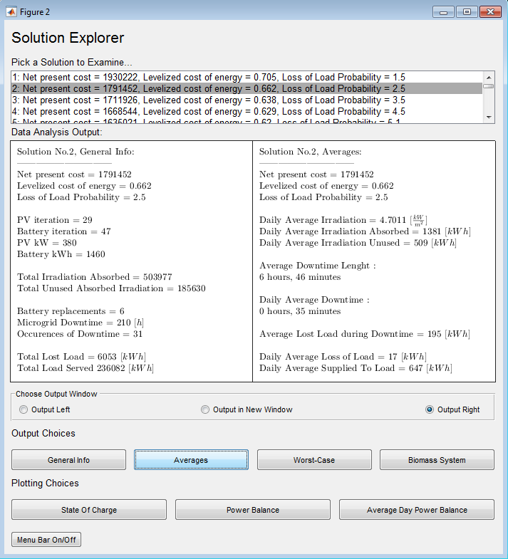

Table of contents
- Notes to the User (Important)
- GUIs
- Modules
- Classes And Properties
- SimulationOutputs
- EconomicAnalysisOutputs
- OptimalSolutions
Notes to the User (important)
Updating Parameters
If you want to use this tool for dimensioning and planning purposes, asses the parameters and input thoroughly. The parameters in the cycles_to_failure function and in the classes and properties section (especially the economic parameters) should be investigated and updated, if not, results will be loose practical value. If your parameters are very precise/predictable, you may utilize the fine tuning aspects of this tool. One example of fine tuning is the step of LCoE (levelized cost of energy) and NPC (net present cost) whenever another battery replacement is necessary (look for the steps in the simulation overview surface plot). If not, please only use the trends from the simulation to plan your power plant installation. For a brief summary of small scale electricity generation, read up here
iPv and jBatt
These variables are recurring in the implementation as a way of choosing solutions. When iterating through the different combinations of PV and battery sizes, the for-loops will use iPv and jBatt as the iteration variables. ex. for iPv = pvStartKw:pvStepKw:pvStopKw. These iteration names are also used later in the code to refer to the same PV and battery combination. ex the largest size of PV and battery have the loss of load of SimulationOutputs.lossOfLoad(:,iPv,jBatt) = SimulationOutputs.lossOfLoad(:, nPv, nBatt) where nPv and nBatt is the number of iterations of each component size.
Data Location
The datasets needs to be located under the database folder under a folder that defines the set. This is input to the dst_platform under filenames (just the names) and dataset (the folder which the files are located inside the database folder)GUIs
Here follows explanation of the different user interfaces that run the DST and how to use them. (How the GUIs are implemented will be explained at the bottom of the document.)
dst_gui
The DST GUI is a tool for changing the parameters/ saving presets and for running the different modules with these settings. It allows for presets to be saved and deleted, this means that the drop down menu will change the parameters to the value saved, even the check boxes. It is not necessary to save a preset to run it. You can run all the modules with the "run all modules button", or run single modules by pressing their respective run buttons, note that the necessary variables from the preceding modules need to be in place if you want correct results.
The GUI programs will assign the appropriate values to the workspace, when a "run module" button is pressed.
solution_explorer
The solution explorer allows for key data from a given solution to be displayed. The top list displays the different solutions that was found. They are identified by a solution number, a net present cost, a levelized cost of energy and a loss of load probability
There are three display options, two windows in the tool, and one option will make a new window. The choices for output are general info will give you an overview of the simulation, averages and worst case will allow for an understanding of the system performance and the biomass system will inform about how the biomass system functioned.

Modules (top)
[ simOutput ] = sapv_plant_simulation( SimulationParameters, PvParameters, BatteryParameters, InverterParameters, SimulationInputData )
This is the "Stand Alone PV Plant Simulation". It simulates the entire time series of the input data for every combination of PV and battery value, chosen as the simulation parameters. The module output is the class SimulationOutputs. Computational complexity O(n^3) (nHours*nPvSteps*nBattSteps)
The system works roughly as follows: The load is covered by the irradiation input from the PV array, pvPowerAbsorbedKw, if there is more power left, it goes to the battery, when there is insufficient, the battery will cover the load (if it has enough charge). For each cycle, after at least 8 hours of discharging, the algorithm detects the depth of discharge and calculate the partial wear on the battery (more on this in the simulation outputs, and partial cycles), what is important to note is that this wear on the battery is the basically the only result used for the economic analysis.
[ simOutput ] = pvbiomass_plant_simulation( SimulationParameters, PvParameters, BatteryParameters, InverterParameters, SimulationInputData, BiomassParameters )
An adaption of pv_plant_simulation to include the utilization of a biomass generator parallel to the system. Since there is a wide variation of biomass generators available, the implementation is as generic as possible so that each systems functionality can be implicitly included whether it is automatic or governed by human response. The input unit is in kW, this leaves the conversion to the user, all assumptions about mass to energy conversion is hence excluded from the implementation. The reason for this is the large differences between biomass power productions. Read more about
TODO: put biomass reference hereThe system will always be in one of the following states:
Idle
The system is turned off and ready. Transition to the starting up state if there is a loss of load occurrence or to running preemptively if at the start of the day, the following day forecast is cloudy.
Starting up
The system is starting up, the delay is given by the BiomassParameters.startupDelayHours variable. If the PV power becomes sufficient to run the load, the state will change to idle again. If the counter finishes the system state becomes running or if it is a new day and forecast as cloudy, it will start running preemptively immediately
Running
The generator is on and produce power to the grid. Will turn off and go to idleif the PV power to the grid becomes sufficient to cover the load, so that the generator is not needed anymore. The system will start running preemptively if a cloudy day is forecast at the start of a day. If there is not enough output kW to bring the grid online, then the system will wait and try again later in the waiting to retry state. If the system runs out of sufficient, the state machine will wait for a biomass delivery in the insufficient biomass/fuel state.
Running Preemptively
Charging the batteries with the biomass system. The system is trying to compensate for a forecast cloudy day through staying on for an extended period of time. The system will keep working preemptively until the battery is either full, or if a sunny day is predicted, in which case it will return to the idle state. If either runs out of biomass or has insufficient kW output, it will be interrupted and go to the insufficient biomass or waiting to retry states respectively. The system will transition directly into this state without a startup delay, as this is scheduled operation, any startup delay is assumed included in the schedule.
Waiting To Retry
The generator does not have enough output kW to bring the grid back online, and will therefore be wasted if left on, the system waits for the length of BiomassParameters.retryDelayHours and then goes back to the state it was in before the generator was switched off. If there is a prediction for a cloudy day during the wait, the system will change it's next state to running preemptively, if it initially was in this state and there is a sunny forecast, then the state will go to idle
Insufficient Biomass
The system is out of biomass and waits for a new delivery before it goes back to the idle state.

pvbiomass_plant_simulation implementation flow-chart

[ EconomicAnalysisOutputs ] = economic_analysis( SimuationParameters, BatteryParameters, InverterParameters, SimulationInputData, EconomicParameters, SimulationOutputs)
This module provide the economic calculations for the simulation results. The module output is the class EconomicAnalysisResults. The output matrices typically have one set of economic calculations for each PV and battery combination. Computation complexity O(n^2) (nPvSteps * nBattSteps)
The analysis does roughly the following: figures out the costs depending on the different system sizes, these depend on the simulation parameters (except inverter). Then the wear on the battery in sumPartialCyclesUsed yield how many times the batteries must be replaced, and the cost of this.
[ EconomicAnalysisOutputs ] = economic_analysis_biomass( SimuationParameters, BatteryParameters, InverterParameters, SimulationInputData, B EconomicParameters, SimulationOutputs)
The same as the previous economic analysis but includes the present cost of biomass maintenance and fuel. Also adds the investment cost of the biomass system to the output
[ OptimalOutputs ] = llp_constrained_optimums( SimulationParameters, SimulationOutputs, EconomicAnalysisOutputs )
Finds the optimal values for each loss of load value in the llpSearcg span. For every specific value of loss of load probability, the algorithm tries to find simulations with the same LLP and will then choose the one simulation with the lowest net present cost.
[ OptimalOutputs ] = npc_constrained_optimums( SimulationParameters, SimulationOutputs, EconomicAnalysisOutputs )
Works the same way as the llp_constrained_optimums module, just the other way around. Will search for a desired set of NPC values, and will amongst them choose the solutions that has the smallest LLP.
[ OptimalOutputs ] = lcoe_optimums( SimulationParameters, SimulationOutputs, EconomicOutputs )
This function finds the global minimum of levelized cost of energy for a simulation. For every extra battery that the system has to use, the LCoE increase by a step, and as the scale of the system go closer to that of needing another battery, the LCoE decrease. This can only be exploited if all the model parameters are very finely tuned to represent the real case scenario. See the simulations_overview plot for a graphic representation of these steps.
Classes and Properties (top)
All parameters, inputs and outputs are contained in classes. The classes allow for batch passing of variables, and offer some help functions for generating dependent variables. The classes also allow for more comprehensive naming, consistency and understanding the origin or relation of the variable. The classes should be made pointers so that they are not copied between modules. This is not the case in the Matlab implementation but is the default behavior of python

SimulatonParameters (class)
This class contain the parameters for setting the boundaries and step size for the simulation PV and battery pairs in the simulation module, and LLPs for the llp_constrained_optimums module. All combinations of PV and battery simulate over the timespan of the input data sets. The resulting complexity of the DST is nPvSteps * nBattSteps * nHours.
pvStartKw
The lowest value of PV size that is simulated. The PV size is given in kW and not in a metric. The size for each kW varies over time and could be input in the PV parameters class, if features which require this metric are added.
pvStopKw
The maximum value that the simulation will pair with a battery size.
pvStepKw
The step size between PV sizes in the given range from pvStartKw to pvStopKw. For wide searches, a large step size is recommended. Details become computationally expensive in wide searches.
battStartKwh
The lowest battery size simulated. The size of battery is given in kWh capacity.
battStopKwh
The maximum size battery that is simulated.
battStepKw
The step size that determine the number of battery sizes between battStartKwh and battStopKwh simulated.
llpSearchAcceptance
Used in the llp_constrained_optimums module, there is a range of llp values that the algorithm try to find in the simulation results. This value sets the acceptance interval for each value step.
llpStart
The lowest value of loss of load probabilities that the module tries to find a match for in the simulation outputs.
llpStop
The highest value of loss of load probabilities that the algorithm that the module tries to find a match for in the simulation outputs.
llpStep
The step size that determine the resolution of the search for loss of load probabilities. This step size does not affect the computation speed much as it has complexity O(n) and can be set reasonably small if desired.
llpSearchTargets
This variable collects previous variables into one array, generated the following way llpStart:llpStep:llpStop
npcSearchAcceptance
Used in the llp_constrained_optimums module, there is a range of llp values that the algorithm try to find in the simulation results. This value sets the acceptance interval for each value step.
llpStart
The lowest value of loss of load probabilities that the module tries to find a match for in the simulation outputs.
npcStop
The highest value of net present costs that the algorithm that the module tries to find a match for in the economic outputs.
npcStep
The step size that determine the resolution of the search for net present costs. This step size does not affect the computation speed much as it has complexity O(n) and can be set reasonably small if desired.
npcSearchTargets
This variable collects previous variables into one array, generated the following way npcStart:npcStep:npcStop
nPvSteps
Keeps track of the total number of PV sizes simulated. Automatically generated upon initiation.
nBattSteps
Keeps track of the total number of battery sizes simulated. Automatically generated upon initiation.
hasBiomass
Is true if a biomass system is used
PvParameters (class)
Contains the physical parameters of the PV
balanceOfSystem
A collection of factors that will make the PV less efficient. Among these factors are soiling of the panels, wiring losses, shading, snow cover, aging and so on
nominalAmbientTemperatureC
The nominal ambient (air) test-temperature in the surroundings of the PV. Given in Celsius.
nominalCellTemperatureC
The nominal operating cell temperature when exposed to irradiation. Given in Celsius.
nominalIrradiation
The nominal irradiation exposure level of the PV. Given in kW per square meter. (kW/m^2)
powerDerateDueTemperature
The expected loss of power due to difference from nominal cell temperature.
BatteryParameters (class)
This class contain the different physical parameters of the battery
minimumStateOfCharge
The maximum discharge percentage that the battery allow. Depending on the individual battery's depth of charge vs. cycles to failure function this should be set to optimize the lifetime of the battery
initialStateOfCharge
The state of charge at t = 0
chargingEfficiency
The percentage of power imposed on the battery that end up in the battery as potential power
dischargingEfficiency
The percentage of potential power that is output as useful power from the battery
powerEnergyRatio
The kW charging/discharging power possible, given a energy level in the battery in kWh. For example, a battery with powerEnergyRatio = 0.5 can maximum output 50 kW if the energy level is at 100 kWh.
maxOperationalYears
The maximum number of years that the battery can stay operational before replacement. Independent of how the battery is used.
Inverter Parameters (class)
The physical parameters of the inverter
efficiency
The efficiency of the inverter. the percentage of output power wrt. input power.
EconomicParameters (class)
budget
The available money for the project. This variable is unused in the modules
pvCostKw
The variable purchasing cost of PV output kW capacity. *Source: Uganda data.
battCostKwh
The variable purchasing cost of battery kWh capacity.
battCostFixed
The fixed cost for purchasing batteries. For transportation or one time payments or manufacturing fixed cost.
inverterCostKw
The purchasing cost of the inverter. Decided by the peak kW in the load profile. Meaning that the inverter is dimensioned for maximum load. Different from the other /kW parameters that we use. *Source: MCM_Energy Lab + prof. Silva exercise, POLIMI
operationMaintenanceCostKw
The operation and maintenance cost of the PV kW output capacity.
installBalanceOfSystemCost
The cost of installing and balance of system as a percentage of the components total costs (investment cost)
plantLifetime
The planned lifetime of the plant.
interestRate
The interest rate *defined in HOMER: nominal rate - inflation
biomassCostKw
The cost of the biomass needed for each kW output from the generator. Meaning that the effectiveness of the biomass system is implicit here. This leaves the user to make the appropriate conversions and assumptions.
bioSystemOperationCost
The yearly cost of maintaining and running the biomass system.
bioSystemInvestmentCost
The investment cost for installing, shipping and purchasing the biomass power system.
BiomassParameters (class)
isPreemptive
is true if the implementation is supposed to work preemptively. This means that if cloudy weather is forecast the generator will turn on and work until either the battery is full, or if a new day occurs and the forecast is sunny weather. If false, then the system only works in the running mode and never the running preemptively mode
nomPeakPvPowerTreshold
This is an heuristic approach to guessing what days will forecast as cloudy and sunny. The absorbed PV power is used to filter the irradiation data since it has a nominal operating mode and reduce anomaly peaks this way.
First the global peak of pvPowerAbsorbedKw for the entire set is found. For each new day, the peak absorbed PV this day is divided by the global peak and compared to the nomPeakPvPowerTreshold. If the ratio is lower than the threshold, the day is assumed to be forecast as a cloudy day.
biomassDeliveredKw
The amount of biomass (in kW) delivered upon interval.
biomassDeliveryIntervalDays
The time span between deliveries of biomass.
generatorOutputKw
The kW output of the generator, assumed static. We don't need to adjust the output because the batteries will pick up excess whenever the generator is on (it only charges the batteries when running preemptively).
startupDelayHours
The delay from a loss of load occurrence until the generator is producing power. This delay can be from the human response time, or because of a startup delay (like firing up a furnace for thermal generation), or most likely a combination unless everything is automated.
retryDelayHours
The waiting time between a failed attempt at running the generator (the power does not come online despite the additional support to the grid) until another startup attempt. The transition here is immediate as it is assumed planed, and hence a startup delay is included in this delay.
SimulationInputData (class)
load
The load profile of the entire timespan. Current resolution at hour intervals. This makes each point both a kWh and kW measure.
irradiation
The irradiation of the entire timespan. Hourly resolution.
temperature
The surface temperature of the entire timespan in Celsius. Hourly resolution
nHours
The span of the input data in hours. Generated automatically at initiation
nYears
The span of the input data in years. Generated automatically at initiation
irradiationFilename
The filename of the irradiation data file.
loadProfileFilename
The filename of the load profile data file
temperatureFilename
The filename of the temperature data file
folderName
The folder name containing the desired data set
databasePath
The path of the database in which the different folders of data sets are stored. Generated automatically upon initiation
SimulationOutputs (class)
The outputs from the sapv_plant_simulation module for battery and PV combinations.
pvPowerAbsorbed
The potential power that the PV absorb from the sun.
neededBattOutputKw
The load demand on the batteries. If the PV does not supply enough power to serve the load, the battery will have to output power. If this variable is negative it means that the load has been served by the PV and that there is more power available. If the battery is not full, it will use this to charge.
battOutputKw
The actual output power of the battery to serve the load. This is the change of the battery potential energy and is subject to losses like discharge efficiency and inverter efficiency.lossOfLoad
The kW that are not met by the system. Whenever the system has lost load, this value will describe the difference between the needed output and the available output.
lossOfLoadTot
The summed up loss of load of a simulation.
lossOfLoadProbability
The probability that you will encounter lost load for each kW you wish to use. Defined as sum(lossOfLoad)/sum(load)pvPowerAbsorbedUnused
The power that is not utilized from the PV. This happens in two ways: either the battery is full already, or the battery is unable to charge fast enough.
stateOfCharge
Describes the percentage battery charge level over the simulation
sumPartialCyclesUsed
From the rainflow counting algorithm. Any depth of discharge can be repeated a number of times before the battery fails. When the battery starts charging again after discharging. The cycles_to_failure algorithm calculates how many cycles the current depth of discharge would allow nCycles, then it counts the partial cycle used as + 1/nCycles. When this variable is ==1, the battery has spent all it's partial cycles during the simulation time.
biomassGeneratorOutputKw
Contains the hourly output of the biomass system generator
EconomicAnalysisOutputs (class)
The output class of the economic_analysis module
investmentCost
The investment that needs to be payed initially. This includes components cost at t = 0 and the installation cost. This also accounts for balance of system, the reason of which is unclear but it is batched with installment cost on the implementation level.netPresentCost
The total cost of the system after investment and yearly maintenance and replacement costs through the lifetime of the system. Also accounts for salvage refund of battery as they might have remaining lifetime.
levelizedCostOfEnergy
The LCoE is calculated by dividing the netPresentCost into equal annuities every year, so that we can divide this again on the amounts of kW produced by the system. The cost per kWh supplied by the system over the simulation period. This is important because we want the micro-grid to be competitive with the grid prices. We want to 1. justify the investment, and 2. be able to sell power to the grid if need be.
battCostTot
The total purchasing cost of the batteries at installation. Does not account for the replacement net present costs.
inverterCostTot
The inverter total purchasing cost at installation. Does not account for the replacement net present cost (is replaced at halfway of plant lifetime)
pvCostTot
The purchasing total cost of the PV
installBalanceOfSystemCostTot
The part of the component investment cost that accounts for installation and balance of system costs.
operationsMaintenanceReplacementCostTot
The resulting net present cost of maintaining and operating the plant throughout the plants lifetime.
capitalRecoveryFactor
A way of accounting for the cost of capital. The factor converts an amount into n equal annuity payments given a normalized interest i. This is used for calculating the LCoE
nBattEmployed
The number of times the batteries need to be completely changed and repurchased for the system.
biomassSystemNetPresentCost
The total net present cost of the entire biomass system. This includes the investment, biomass consumption costs and maintenance costs.
biomassPresentCost
The present cost of the biomass spent.
OptimalSolutions(class)
A class for containing the optimal solutions. Arranged in arrays with solutions stored as they are found. Meaning that the first solution found will have the first index in all the variables.pvIndexes
Refers to the corresponding index of the optimal solution in the original output matrices. If pvIndexes(1) = 1, then the first iteration of the simulation was an optimal solution.
battIndexes
By the same logic as pvIndexes. To refer to a value corresponding to a optimal solution, one can use these variables. This way, SimOut.lossOfLoad(OptSol.pvIndexes, OptSol.battIndexes) == OptSol.lossOfLoadProbabilities.
pvKw
The PV sizes of the optimal solutions
battKwh
The battery sizes of the optimal solutions
lossOfLoadProbabilities
The loss of load probabilities of the optimal solutions is equal to SimOut.lossOfLoad(OptSol.pvIndexes, OptSol.battIndexes)
levelizedCostsOfEnergy
The levelized cost of energy for each optimal solution. Is equal to EconomicOut.levelizedCostOfEnergy(OptSol.pvIndexes,OptSol.battIndexes).
investmentCosts
The investment cost of each optimal solution. Is equal to EconomicOut.investmentCost(OptSol.pvIndexes, OptSol.battIndexes)
Plots
The following section will describe the plotting functions available. The iPv and jBatt inputs are the indexes of the PV size and battery size in the output matrices in SimulationOutputs and EconomicOutputs. The plots have a biomass version that will display the operation of the biomass power generation.plot_state_of_charge( SimulationParameters, BatteryParameters, SimulationOutputs, iPv, jBatt )
Plots the normalized state of charge (nominal to battery size). The green line is overproduction which appears whenever the PV input to battery is larger than the battery max charge speed (kW). This plot enable inspection of the kWs that the battery fall short of supplying or absorbing. It also clearly illustrates occurrences of lost load and overproduction in scale to the battery normal use.
plot_average_state_of_charge( SimulationParameters, BatteryParameters, SimulationOutputs, iPv, jBatt )
Will plot an average day of the same principles as above. The problem with this is that the continuity between the battery, loss of load, and overproduction lines are not preserved, and hence will remove some of the scaled insight that the user experience from the time dependent plot.
plot_power_balance( SimParam, BattParam,InvParam, SimInputData, SimOutput, iPv, jBatt )
The power balance of the system with respect to the different power kWs directly available to load. This is referred to as net powers. Will allow inspection of the source of power to the load at any given time. The red line is covered by the blue line whenever the load is served. The yellow line illustrate the power from PV to the system. The integral of the yellow power from PV line will always be equal to the integral of the blue supplied load line.
plot_average_power_balance( SimParam, BattParam,InvParam, SimInputData, SimOutput, iPv, jBatt )
Plots an average day of the principle mentioned above. Very useful for evaluating the average behavior and performance of the simulated system
simulations_overview( SimulationOutputs, EconomicOutputs )
Will make four plots which will display the loss of load probabilities, levelized costs of energy, the number of batteries replaced during simulation time and the net present costs of the different simulation pairs. This will help to narrow or expand the search borders in simulation parameters.
Help Functions
[cycles] = cycles_to_failure( depthOfDischarge )
The cycles_to_failure function needs to be updated. The function is a fitting how many cycles the battery can handle at a certain level of discharge, before breaking down. This function will be supplied by the battery manufacturer and can simply be placed in the matlab function shown below.
[averageDay] = get_daily_average( input )
For an array with hour resolution, this function calculates the average value for each hour in a day (24 hours).
[hourArray] = get_hour_resolution( inArray, pointsHourly )
For an array with a resolution given by pointsHourly, this will combine the points into a hourly resolution array.
[pvKw, battKwh] = get_most_expensive_solution( load, EcoParam, BattParam, InvParam, operationMatinenanceReplacementCost, investmentCost )
A function to find some bounds for simulation. Assuming that the batteries are used with maximum wear and tear, it finds a system given that one know the budget for both investment and operation and maintenance. This solution is not optimal, but will reflect a minimum performance that one can expect for a given budget. The purpose of this is to find some lower bound for simulation. The found solution is given analytically by: ...
[ path ] = get_path_to_database_folder( dataSetFolder )
Cross platform (OS), will return the full path to the database folder and a given sub-folder. This function assumes that the database folder is one step up from the functions folder. If you only want to operate in the database folder, pass an empty string argument.
[ weatherPredictions ] = get_weather_predictions( pvPowerAbsorbedKw, nomPeakPvPowerTreshold )
Returns a cell-array of weather predictions for the given absorbed power data. This is a heuristic function for guessing what days will be forecast as cloudy and sunny, for the case of running a generator preemptively.
[ nBattEmployed, yearsBattOperational ] = get_worst_case_batt_use( load, minSoc, plantLifetime )
Assumes that every cycle that the load profile simulates is at maximum depth of discharge (minimum state of charge). This will output the most wearing use that the batteries can be subjected to. NOTE that this function will have to be "trained" for each data set to count the correct number of cycles, if you are sure that the cycles will occur once every day, this function can be replaced by plantLifetime/yearsBatteryOperational = plantLifetime/(1/(365/cycles_to_failure(1-minStateOfCharge)))
[ longestPeriod, indexOfLongestPeriod ] = get_longest_period( dataSet )
Takes a vector and returns the longest period of nonzero values within that vector. Meaning that a completely nonzero vector will return longestPeriod = the sum of the entire set, and the indexOfLongestPeriod = 1.
[ LowestIrradiation, LargestLoadProfile, LargestLossOfLoad ] = get_worst_case_periods( load, irradiation, lossOfLoad )
Returns three structs containing index and value for both week and day with worst values of the three input vectors. This means that the day with lowest irradiation will be found at LowestIrradiation.Day.time, and the sum of irradiation during this day is in LowestIrradiation.Day.value. The same logic applies to the other outputs.
Cloning the DST from Git-Hub
The DST source-code is found online on http://www.github.com/gardhi/DST. To inspect the code one only need to have a browser and internet, to run and test the code the code needs to be downloaded through Git. Git is a version control program that allows for agile collaboration on projects, the use of Git is established throughout the programming world and widely used by the majority of professionals.
Instructions on Downloading and testing the DST
- Install a Git client from anywhere.
For a desktop easy-to-use interface download github here: https://desktop.github.com/
- Open the Git Shell.
If you are using windows, press the windows-button and write: Git Shell
- Clone the repository.
While using the git shell, navigate to the folder where you want the project to be placed. Cloning basically means downloading, this is done in the current folder by writing:
git clone "http://www.github.com/gardhi/DST"It should look similar to this:
- Run the code
You now have the entire project in the destination folder, open it in Matlab and include the folder DST to path and all subfolders.
To run the DST, simply write “dst_platform” in the Matlab console window once the folders are on the Matlab path.
- Contribute
To work on the project, make a branch either in GitHub desktop or in the shell.
When your feature is finished it can be added to the project by a merging your branch with the master branch, and then pushing to the origin, or by a practice determined by project administrator. In this case a pull request is required, documentation is found online.
contact: gard.hillestad (at) gmail.com
About the GUI implementations
Note that the structure of the GUI is more quickly made than the modules, as the GUI will be completely rewritten in another language, the look and functionality is the example that successors will benefit the most from.
All the GUIs are implemented with two global structs. The 'Set' struct keeps track of all the values that go from the GUI to the Matlab workspace. The 'h' struct contain the handles for the different uicontrols.